Chapter 11
Advanced classification techniques for drone payloads
1Department of Microelectronics, Microwave Sensing Signals and Systems (MS3) Group, TU Delft, Delft, The Netherlands
2James Watt School of Engineering, University of Glasgow, Glasgow, United Kingdom
11.1 Introduction
This chapter presents a summary of radar-based classification approaches developed for small drones carrying payloads. Specific focus is given to three types of techniques that were validated on the same multistatic radar data set collected using the University College London (UCL)-netted radar NetRAD. These techniques used, respectively, features extracted from the centre of mass and bandwidth of the micro-Doppler signatures; different radar data domains generated from the micro-Doppler data to be processed by pretrained Convolutional Neural Networks (CNNs) and spectral kurtosis analysis on the micro-Doppler.
All these approaches make the assumption that differences in the kinematics of the drone and rotation patterns of its blades induced by the presence of the payload can be captured by the analysis of the micro-Doppler signatures. While this might not always be the most effective approach for all operational scenarios and all payloads, some interesting results are presented.
Recently there has been a significant ‘buzz’ about small drones, due to the proliferation of these platforms becoming cheaper to buy off the shelf, or even to assemble in-house. For example, it is estimated that there will be a global market of £102bn for drone-based activities by 2025 [1], and over 2,000 licenses for commercial drone operators have already been granted in the United Kingdom.
Many novel leisure and commercial activities have arisen from this proliferation of small drones: from professional filming to autonomous inspections in critical infrastructures and environments, from support to agriculture and parcel delivery, to search and rescue, and support to Internet connectivity in remote areas [2].
Similarly, attention from the media and concerns from law enforcement agencies and air traffic controllers have been raised for many potential misuses of these platforms, either accidentally or voluntarily. These may include illegal filming, privacy violation, collision hazard with other aircraft (very sensitive for larger aircraft taking off and landing) and people/assets on the ground, transport of illicit material (drugs into prisons, e.g., an issue in the United Kingdom), and terrorist attacks and weaponised drones (ISIS has been reported to try and use them) [2]. An example of the disruptive potential of these platforms is the closure of London Gatwick airport in December 2018, which was estimated to disrupt 120,000 passengers and block the departure of 700 flights scheduled in that period [3].
From the radar engineering perspective, small drones are an emerging class of targets posing challenging monitoring problems with traditional approaches and systems, often designed for monitoring larger aircraft that fly at higher altitude. Drones are on the contrary small in size, mostly made of plastic or materials that have low Radar Cross Section (RCS), and highly manoeuvrable, making them difficult to sense with radar, especially in complex and clutter-rich urban environments [4,5].
As a result of this challenge, research effort in various aspects of radar signatures of small drones has drastically increased in recent years. For example, the review paper in [4] published in 2018 counted more than 40 publications on the subject in 2017, whereas in previous years, only approximately 10 papers were published on this. A special issue on the subject of ‘Innovative Radar Detection, Tracking and Classification for Small UAVs as an Emerging Class of Targets’ was organised by IET Radar, Sonar & Navigation and published in 2020 [6]. The book of which this chapter is part is also an example of the current interest of the radar research community in this subject.
More specific research topics within the general ‘radar signatures of small drones’ theme include, for example the characterisation of RCS and the polarimetric response of these platforms [7–14]; algorithms for classification of different models of drones and drones vs birds [15–21]; algorithms for tracking drones [22,23]; systems employing passive radar techniques exploiting a variety of illuminator of opportunities, among others [24–28].
While performing an extensive literature review of all papers is a task well beyond the scope of this chapter, its specific focus is on the classification of payloads that drones could be carrying. Detecting the presence of payloads and if/where possible also additional information on their size, volume, material composition can be critical in situations where the drone could be carrying illicit or dangerous materials (e.g. drug smuggling, modified drones to carry weapons or explosives). On this specific focus, there is, to the best of our knowledge, not a large amount of work published in the open academic literature.
This chapter aims to bring together in one place some of the recent results published (Sections 11.2 and 11.3) and provide some considerations on open challenges and possible research trends (Section 11.4).
11.2 Radar system and experimental setup
The data discussed and analysed in this chapter were collected using the multistatic radar system NetRAD [29–31], which was developed at the UCL over a number of years and used for multiple experiments on multistatic targets and clutter signatures. NetRAD stands for ‘Netted Radar’ and is a coherent pulse radar composed of three identical but separated nodes that operate at 2.4-GHz carrier frequency (in the S-band).
In this specific experiment, the pulse waveforms used linear chirp modulation with 0.6-μs duration and 45-MHz signal bandwidth. The chosen Pulse Repetition Frequency (PRF) was 5 kHz to ensure that the whole micro-Doppler signatures of the small drone and its rotor blades were included in the unambiguous Doppler region. The radar transmitted relatively low power (+23 dBm) and was equipped with horizontally polarised antennas with approximately 10°×10° beamwidth, and 24 dBi gain. The choice of horizontal polarisation was determined by studies showing that this is more suitable to capture and characterise micro-Doppler patterns of the rotor blades of small drones [7,22].
The experiment was performed in July 2015 in a football field belonging to the UCL Sports Ground to the North of London. Figure 11.1 shows a sketch of the experimental setup, with the three NetRAD radar nodes deployed along a linear baseline with approximately 50-m internodal separation. The central node, Node 1, acted as the monostatic transceiver, whereas Nodes 2 and 3 were used as bistatic receiver-only nodes.
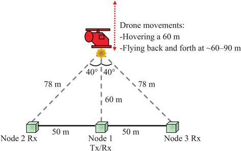
Figure 11.1 Sketch of the experimental setup for data collection
The model of small drone used in the experiment was a DJI Phantom Vision 2+, from which the original camera was removed to accommodate payloads of different weights. The weight of the drone prior to adding any payload was approximately 1.2 kg. The payloads used in this experiment included a small plastic tray mounted below the drone, containing small metallic discs. Multiple identical discs were stacked together to generate different weights for the payloads, namely 200, 300, 400, 500, and 600 g; these in addition to the case of free flight, i.e. no payload added. It should be noted that the 600-g payload appeared to be the limit for the drone to be able to take off and fly reasonably; hence, heavier payloads were not attempted with this drone. In this experiment, the volume, shape, and position of the payloads with respect to the body of the drone were not investigated; the only variable of interest was the overall weight of the payloads, which was simply increased by stacking more identical discs on the tray.
For each payload case, two types of movements were recorded. Initially, the drone was hovering at approximately 60-m distance from the baseline, resulting in a bistatic angle of 40° for both bistatic nodes. Then, simple back and forth linear trajectories were recorded for the drone flying from approximately 60 to 90 m, along the radial line of sight of Node 1. Each recording of radar data was 30-s long, corresponding to 150,000 recorded pulses. It should be noted that NetRAD operates as a staring radar, without the ability to rotate the antennas and track the target. For this reason, the antennas were aligned to the point of hovering for the drone, approximately 60 m away from the baseline.
11.3 Classification approaches for drones and payloads
In this section, details of the classification techniques used to identify whether the drone was carrying a payload or not based on radar signatures are described. Common to these techniques is the usage of micro-Doppler spectrograms, which result from taking the absolute value (intensity) or power (squared intensity) of the Short-Time Fourier Transform (STFT). STFT is a common choice as time–frequency distribution for the characterisation of radar micro-Doppler signatures and has been applied to many radar-based classification problems, including human movements and gait, automotive setting, human gestures for interaction with smart devices, animal locomotion, and ballistic targets, among others [32–36]. STFT and micro-Doppler spectrograms have also been extensively used for the classification of small drones, for example, to differentiate between drones and birds and to differentiate different models of drones [16,17].
Equation (11.1) shows the formula of the STFT, where the signal x[n] is multiplied by the window w[n] and transformed in the Doppler frequency domain. Note that k/N in (11.1) indicates the discretised values of the frequency, f.
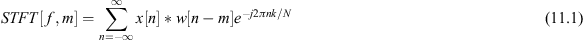
The window slides along the time domain signal with a given overlap between consecutive steps, and the result of this operation is a matrix as a function of time and Doppler frequency. An important parameter is the duration of the sliding window, as this influences the estimation of the frequency components in the micro-Doppler signature. If the window is sufficiently short with respect to the rotation of the blades of the drones, individual peaks (often called ‘blade flashes’) can be identified in the spectrograms. If the window is of longer duration, the contribution of the blades’ signatures appear smeared over time onto horizontal lines in the spectrogram (often called ‘HERM lines’, Helicopter Rotor Modulation lines [14,37]).
11.3.1 SVD and micro-Doppler centroid features
Before resorting to the usage of micro-Doppler, an attempt was made to derive features directly from the Range–Time–Intensity (RTI) plots, which are provided by the NetRAD radar. This approach assumed to relate the presence of the payload to variations in the received power reflected by the drone, in case the payload modified the overall RCS or more in general reflectivity of the ‘drone+payload’ target.
The original 30-s recordings were divided into blocks of 1-s duration each, equal to 5,000 radar pulses at 5-kHz PRF. Then the standard deviation and mean value of the received signal were extracted, specifically looking at the signal in the range bin where the signature of the drone was contained. Figure 11.2 shows examples of these feature samples for five classes of interest (from no payload to 500-g payload) for data from the three radar nodes; feature 1 is, in this case, the mean value and feature 2 the standard deviation. Visual inspections of these plots revealed a poor separation between the classes of interest and led to conclude that classification algorithms based on these features only would perform poorly. While fluctuations of the reflectivity/RCS value were visible, it was not possible to establish a clear relationship between such changes and the presence of payloads of given weights. Hence, micro-Doppler features were considered more attractive for the classification problem. This does not imply that reflectivity values are always necessarily not informative for different data sets with different payloads size, volume, and material, and different models of small drones.
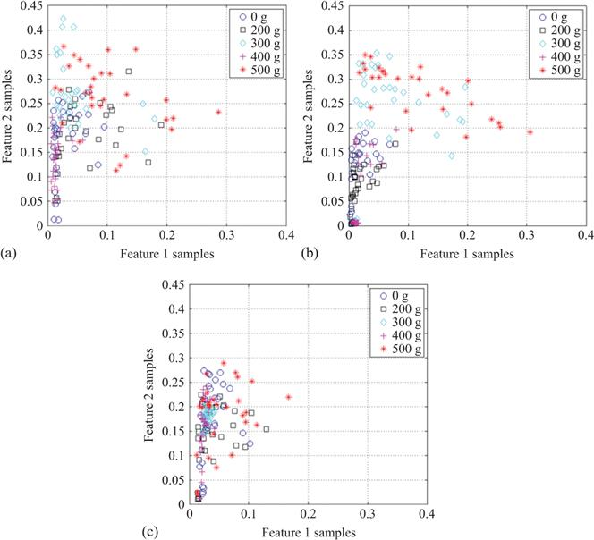
Figure 11.2 Feature samples extracted from the range–time–intensity images for the three radar nodes and five classes of payloads: (a) Node 1, (b) Node 2, and (c) Node 3
STFTs were applied on each recorded data set using a 0.1-s Hamming window and an overlap of 95% between adjacent windows. Each 30-s spectrogram was then divided into shorter segments to extract features. Different durations of each segment were considered to investigate the effect of this parameter, comparable to dwell time on target, on the classification. The five durations that were considered were 1, 1.5, 2, 2.5, and 3 s.
An example of 2-s long micro-Doppler spectrograms is shown in Figure 11.3, where monostatic and bistatic data of the two same recordings are compared, for the drone hovering without payload and with a 500-g payload. By visual inspection, one can see a difference in the patterns of HERM lines, with them assuming a more uniform and smoother trend over time for the heavy payload case, as well as stretching to reach higher positive and negative Doppler frequency values. This can be interpreted as an effect of the higher rotation speed of the rotor blades in the case of heavy payload presence, in order to provide higher lift force to deal with the weight.
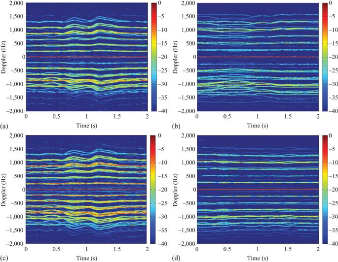
Figure 11.3 Micro-Doppler spectrograms for a small drone hovering: (a) monostatic data with no payload, (b) monostatic data with 500-g payload, (c) bistatic data with no payload, and (d) bistatic data with 500-g payload
In order to capture these empirical differences in quantitative metrics and features, the Singular Value Decomposition (SVD) of the spectrogram was first applied [38]. If the original spectrogram is defined as a matrix M, its SVD decomposition is reported in the next equation:
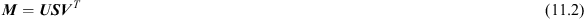
where is a diagonal matrix containing the singular values of  , whereas
, whereas  and
and  are matrices containing the right and left singular vectors of the original spectrogram matrix. Features extracted from the SVD decomposition of spectrograms have been demonstrated for the problem of classifying different models of drones [18], specifically capturing kinematic characteristics such as the velocity and periodicity of rotor blades that are specific to given models of drones.
are matrices containing the right and left singular vectors of the original spectrogram matrix. Features extracted from the SVD decomposition of spectrograms have been demonstrated for the problem of classifying different models of drones [18], specifically capturing kinematic characteristics such as the velocity and periodicity of rotor blades that are specific to given models of drones.
Rather than focusing on a limited number of singular vectors as in [18], one can assume that the relevant information for the classification of payloads is spread across multiple vectors in the whole matrices  and
and  . Empirical analysis on matrices
. Empirical analysis on matrices
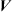
for the available data showed that there were no significant changes for the different classes of interest. On the contrary, the values on the diagonal elements of the matrices show differences for different weights of the payloads. Therefore, the mean and standard deviation values of the diagonal elements were considered as features. Figure 11.4 shows feature samples for five different classes, from no payload to a heavy 500-g payload, where features 1 and 2 are the mean and the standard deviation values of the diagonals of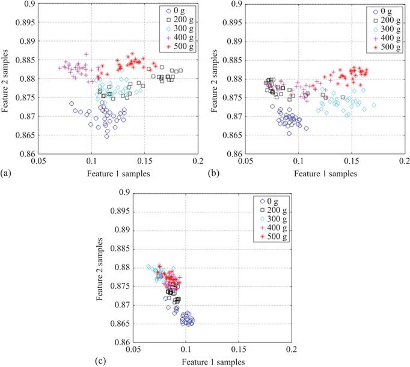
Figure 11.4 Feature samples extracted from the SVD of the micro-Doppler for the three radar nodes and five classes of payloads: (a) Node 1, (b) Node 2, and (c) Node 3
Besides SVD-based features, other simple features were extracted, looking at the centroid and bandwidth of the micro-Doppler signatures [39]. The micro-Doppler centroid can be considered an estimate of the centre of mass of the signature, containing the main velocity component across the different Doppler bins. The micro-Doppler bandwidth can be considered an estimate of the signature spread and intensity around the centroid. Equations (11.3) and (11.4) show the formulae to calculate the centroid
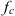
and bandwidth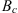
, where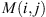
is the value of the spectrogram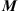
at the ith Doppler frequency bin and jth time bin.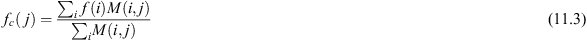
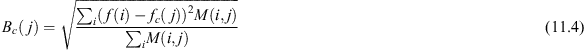
The mean value of the centroid and the bandwidth are considered as features for the payload classification problem. Figure 11.5 presents feature samples extracted at the three radar nodes for the five classes of interest, from no payload to heavy 500-g payload. With these features, clear separation can be seen for all classes at all three radar nodes; hence, an improvement of classification performance compared to using the SVD-based features is expected.
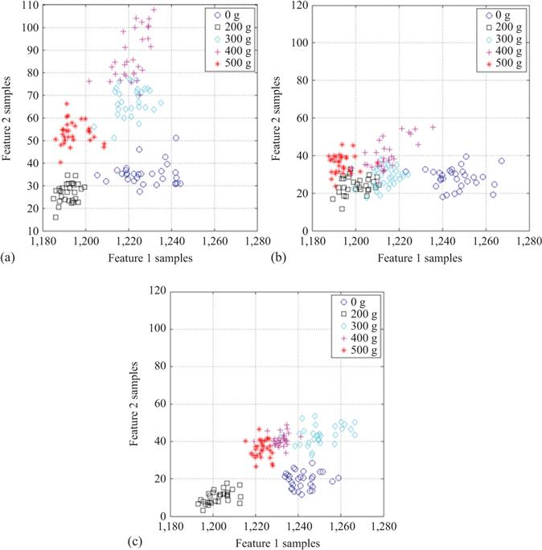
Figure 11.5 Feature samples extracted from centroid and bandwidth of the micro-Doppler for the three radar nodes and five classes of payloads: (a) Node 1, (b) Node 2, and (c) Node 3
The SVD and centroid features were used as input to simple classifiers based on supervised learning framework, specifically naïve Bayes classifier and random forest classifier. The data set is randomly split into a training and testing data set for the classifiers and performance metrics such as testing classification accuracy are calculated. This cross-validation process is repeated 100 times to remove possible biases in the choice of training data and to assess the consistency of the classifiers’ behaviour.
Three different approaches are tested when using multistatic radar data for this classification problem, and these can be compared with the usage of simple monostatic data.
- All feature samples from all the three radar nodes are combined into a single vector (feature fusion) and used to train and test a single classifier.
- Three separate classifiers are used to process the data of each individual radar node, and their partial decisions are fused in a simple majority-voting mechanism across the three nodes.
- Similar to the decision fusion of the previous approach, but in this case, the confidence level in the partial decisions of each node is considered via a threshold when generating a final decision. If two nodes provide the same label and both have higher confidence than the given threshold, their label becomes the final label. If one of these two nodes has lower confidence than the threshold and the remaining third node has higher confidence than the two other nodes, then the final label is provided by the third node. The rationale of this approach is to prevent those nodes with lower confidence leading to wrong classifications. A value of the threshold was set at 65% through empirical investigation with different values in the range 55%–75% with the available data.
More complex decision level fusion schemes can be devised with a system of weights among the different radar nodes or exploiting the diversity of features across different nodes [40], but these were not tested with the available data.
Figure 11.6 presents the classification accuracy as a function of dwell time, i.e. the different duration of the spectrogram segments used to extract features, for data related to the hovering drone scenario. The sub-figures compare different classifiers, the naïve Bayes and the random forest, and each trace in the plots shows a different approach to use and fuse multistatic radar data. The training data set was in this case, 40% of all available data.
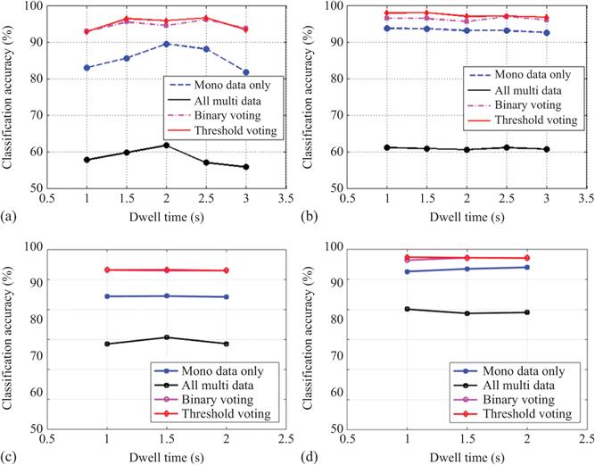
Figure 11.6 Classification accuracy as a function of dwell time (duration of spectrogram segment used to extract features) for hovering drone: (a) naïve Bayes classifier and SVD features, (b) naïve Bayes classifier and centroid features, (c) random forest classifier and SVD features, and (d) random forest classifier and centroid features
Regardless of the classifier and features used, specific trends can be observed with respect to the strategy for multistatic data fusion. The decision fusion approach outperforms both the feature fusion approach and the usage of only monostatic data; however, the usage of the threshold compared to the simpler voting approach in decision level fusion does not appear to bring a noticeable improvement in classification accuracy. The notable decrease in performance when feature fusion at a single classifier is used as opposed to decision level fusion is interesting. This can be related to the differences in micro-Doppler signatures and feature samples seen by the different radar nodes because of the differences in spatial locations with respect to the target. Leveraging this spatial diversity into various feature extraction schemes and decision fusion can be a successful approach to boost classification in multistatic radar systems. Besides the problem at hand, similar results were also reported for classification problems on human micro-Doppler signatures [38–40]. For a given classifier, set of features, and multistatic data fusion strategy, there is no notable variation in classification accuracy as a function of the dwell time. This appears to suggest that acceptable performances can also be achieved with relatively short observation times, such as 1 and 1.5 s, at least for the data analysed in this case. Comparing SVD and centroid features, the latter appears to yield better classification performances with accuracy close to 95%–99% despite using only two relatively simple and easily explainable features.
Some results are also presented looking at the data recorded when the drone was flying back and forth, as shown in Figure 11.1. In performing these flying tests, the flight trajectory and velocity were kept as regular and constant as possible, compatibly with the wind conditions and with the different inertial response of the drone controls as the weight of the payloads was increased. In this case, the classification problem was slightly simplified considering three cases, no payload, the medium payload of 300 g (comparable to the weight of the default camera normally attached to the drone and removed for this test), and the heavy payload of 500 g.
The same features based on SVD and the centroid of the micro-Doppler signatures were considered. Figure 11.7 shows the classification accuracy as a function of the dwell time as the duration of the spectrogram segments used to extract features. As for the case of hovering drones, 40% of the available data were used to train the classifiers, and the decision fusion with threshold was used as a strategy to combine multistatic radar data. This was chosen as the previous results indicated that it outperformed other methods.
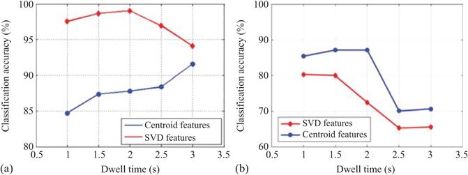
Figure 11.7 Classification accuracy as a function of dwell time (duration of the spectrogram segment used to extract features) for a flying drone: (a) naïve Bayes classifier and (b) random forest classifier
Results with the naïve Bayes classifier show that the classification accuracy monotonically improves with longer dwell time if centroid features are used, whereas this is no longer true for SVD-based features, for which a peak of accuracy is reported for dwell time equal to 2 s. When the random forest classifier is used, a different trend is observed in the general classification accuracy that is significantly decreased for longer dwell times. This difference might be related to the different mathematical formulations of the classifiers, with the Bayesian one assuming Gaussian distributions for the feature samples in each class. This could, in turn, generate different performances for different sizes of the feature space as a function of the dwell time. More investigation with a more extensive set of data with more diversity in terms of drone model, flying trajectories, types of payloads would be needed to validate the earlier hypothesis. However, the classification results reported for this three-class problem are promising, considering that these are achieved with relatively simple classifiers and features.
11.3.2 Pretrained convolutional neural networks
In this section, the classification of payloads carried by the drone is performed using deep learning techniques, specifically a pretrained CNN [41]. The network treats the radar input data as images and processes them in a supervised learning framework to identify the regions of interest in the images that contain relevant information for the classification. This is equivalent to the feature extraction step discussed in the previous section but is in this case implicitly performed within the network itself. It has been shown that some of the features highlighted by the network are related to patterns in the radar data, such as lines or contours, but in other cases, it is more difficult to explain what features or patterns are considered the most informative by the network.
Three different radar data formats, or representation domains of radar data, are presented here. The first is the spectrogram resulting from the STFT, as discussed in the previous section. The second uses cepstrograms. To generate this representation, the natural logarithm of the absolute value of the STFT is calculated. Then an inverse Discrete Fourier Transform (DFT) is applied over each short window similar to what is done for the STFT, followed by an absolute value operator. The formula for the cepstrogram is provided in (11.5), where k/N indicates the discretised values of the frequency, f. For drone signatures, cepstrogram can reveal periodic details in the original spectrogram that can be used as relevant features for the classification of drone targets [41].
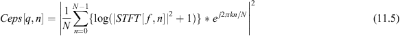
The third representation is the Cadence Velocity Diagram (CVD), which is calculated by performing a DFT across the time dimension of the spectrogram. This results in a pattern of Doppler frequencies as a function of cadence frequency and enables to represent the periodicity of the Doppler and micro-Doppler modulations. Equation (11.6) provides the formula for the CVD calculation, where kcad/N indicates the discretised values of the cadence frequency.
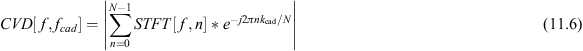
As an example, Figure 11.8 shows the different data domains for the same data set of hovering drones. In Figure 11.8(a), the RTI plot is shown, where the drone can be seen as a vertical line (i.e. more or less stable position over time) between range cells 34 and 36. The other vertical lines present in the plot are the direct signal from the monostatic transceiver (around range cell 10) and the reflection from a line of trees at the end of the experimental area in the field (around range cell 105).
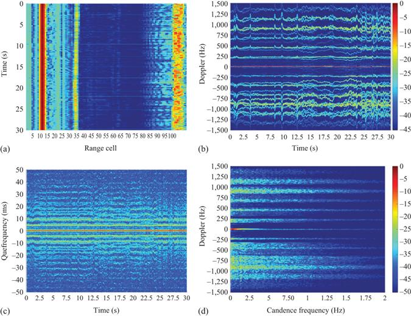
Figure 11.8 Examples of different radar data domains of the same measurement: (a) range–time–intensity image, (b) micro-Doppler spectrogram, (c) cepstrogram, and (d) Cadence Velocity Diagram (CVD)
Figure 11.8(b) shows the spectrogram resulting from STFT, with patterns similar to those shown in Figure 11.3. The rotor blades of the drone produce HERM lines, with values compatible with the operating specifications of the DJI Phantom drone. The maximum rotational rate is quoted at approximately 7,000 rpm in hovering conditions for this drone [20]. Equation (11.7) can then be used to calculate the expected rotation rate resulting from the strongest component in the micro-Doppler spectrogram at about 875 Hz: this yields approximately 5,220 rpm. Note that v is velocity, r is the length of a single blade, ω the rotation velocity, and θ the aspect angle between the radar line of sight and the drone heading. Different scatter points on the blades rotating at different speed generate the spread of the signature over the Doppler axis, with an approximate space between the replicas of approximately 220 Hz [42]. It is believed that the component visible at 1,350 Hz is an intermodulation artefact, as its corresponding rotation speed of 8,050 rpm would be too high for this model of drone, and its signal strength appears to be ~15-dB weaker than the other components.
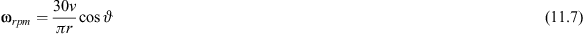
Figure 11.8(c) shows the cepstrogram of the data, and Figure 11.8(d) the CVD plot. From the CVD, it can be seen that the strongest component is localised at about 875-Hz Doppler frequency, which was already noted when discussing the spectrogram in Figure 11.8(b). The signature spans across several cadence frequencies, and it is not immediately obvious to extract a pattern of periodicity by empirical visual inspection. This may be due to the fact that the signature of the rotor blades in the original spectrogram is not exactly periodic over time. There are oscillations and small peaks for each spectral line, but no clear periodicity can be observed in comparison to simulated signatures of blades [36]. However, the energy in the CVD plot appears to be localised at the same Doppler bins where the signature was present in the spectrogram.
As the information contained in these different representations of the radar data is not trivial to extract, convolutional networks have been suggested as a suitable classifier. They enable to identify and extract the relevant information for the classification problem at hand, without explicit calculation of features or fine-tuning of thresholds and parameters by the human operator.
The network considered here is the well-known AlexNet convolutional network [43]. This network comprises five convolutional layers and three fully connected layers, with a Rectified Linear Unit (ReLu) activation function every layer. In this case, we adopted a transfer learning approach whereby AlexNet has been pretrained with optical images belonging to a data set of about 1.2 million samples and containing 1,000 classes to identify. This approach has been shown to yield better classification performances compared to training the network from scratch with radar data, which is generally much more limited in availability and diversity of the classes compared to optical images [32,44]. To adapt the network to our classification problem of drones and payloads, the last three layers were removed and replaced with a fully connected layer, followed by a Softmax classifier and output layer [41].
Regarding the classes of interest, data were considered where the drone was hovering and flying with no payload, and with payloads of weight 200, 300, 400, 500, and 600 g, respectively. For all these cases, the three data representations shown in Figure 11.8 were calculated: micro-Doppler spectrograms, cepstrograms, and CVD plots. These were also down-sampled to reach an overall dimension of 227×227 pixels in RGB images to fit the predefined input layer and format of AlexNet. Then, the classification problem was cast as a pseudo-six-class problem, where, for each of the three data representations considered, binary classification of no payload vs 200–600-g payload was performed. As commented in Section 11.2, for a 600-g payload, the drone was not able to fly properly, hence only hovering data were considered for this payload.
To (partially) address the problem of data scarcity, spectrograms and cepstrograms were split into two halves about the 0-Hz Doppler frequency, with the assumption of symmetry between the positive and negative part, or at the very least same underlying information content. They were also divided into segments of 5-s duration. CVD plots were recomputed for each 5-s long positive and negative halves of the spectrograms.
There was a noticeable class imbalance in casting the problem as binary different payload weights vs no payload, with a ratio of 5:1. As a consequence of this imbalance, initial tests showed that the CNN had significant overfit to the payload class and achieved about 80% accuracy, but yet ignoring a vast majority of the no payload samples. While there is no ready-made method to easily augment radar data such as spectrograms or the other data representations used here [32,44], the imbalance was corrected by generating synthetic no payload data by varying the intensity values between 0.02 and 0.05. This was performed to reach the same number of samples for the two classes of interest for each data representation.
On all the available data, further augmentation processing was applied for the training samples by exploiting symmetries to, e.g., mimic different direction of motions, effectively doubling the number of input samples for training the network. Other methods that are common for optical images, such as rotations and translations, were not attempted as they would produce unsatisfactory classification results in this case. Indeed, this would result in the loss of positional information in the resulting patterns, whereby pattern position in radar data is directly related to kinematic information on the movement of the targets and their parts (i.e. Doppler frequency value and cadence frequency value).
The modified AlexNet was trained with 60% of the available data, validated with another 10%, and tested with the remaining 30% (data which were completely unseen and unused at the training stage). The computations were performed on a high-end workstation with Nvidia GTX 1080TI GPU card, the training time was ~1 h per network.
In the case of the hovering data, the total amount of data was 576 samples, split in 432 for training, 36 for validation, and 108 for testing. These amounts are the numbers of samples per data representation; hence, the total amount of data is three times larger considering spectrograms, cepstrograms, and CVD plots. Figure 11.9 shows the confusion matrix with the average result of five repetitions of the process of training, validation, and testing of the network. The percentage and number of samples for each class is shown in each cell of the matrix, with an expected diagonal structure of the matrix as the problem is basically cast as three simultaneous payload classification cases using the three radar data domains. The total accuracy, averaged across the three data representations, is 95.1%, with specifically 97.2% for the spectrograms, 93.5% for the cepstrograms, and 94.4% for the CVD plots.
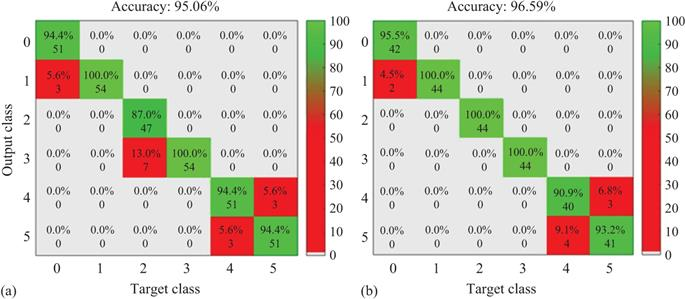
Figure 11.9 Confusion matrices for the hovering drone case (a) and flying drone case (b). Class 0 (spectrogram no payload), 1 (spectrogram payload), 2 (cepstrogram no payload), 3 (cepstrogram payload), 4 (CVD no payload), and 5 (CVD payload)
In the case of the flying data, the total amount of samples was 460 samples, split in 344 for training, 28 for validation, and 88 for testing. As commented earlier, there are slightly fewer samples because the DJI drone could just about hover when fitted with the 600-g payload but not fly. The same testing procedure as for the hovering data was performed, and the resulting confusion matrix is shown in Figure 11.9 on the right-hand side. The averaged accuracy across the three data representations was 96.6%, with 97.7% for the spectrograms, 100% for the cepstrograms, and 92.0% for the CVD plots. The somewhat higher accuracy for the flying case with respect to the hovering case might be caused by the lower variability in the classes with payloads, i.e. the heavy-payload class is missing. Another test was also performed by using the testing flying data with the network trained with hovering data and vice versa. In this case, 78% average accuracy was achieved in both situations.
The approach and results presented in this section only scratched the surface of possible techniques inspired by deep learning and neural networks in the classification of drones and in this specific case a drone carrying payloads [20,45]. The results showed rather similar performances achieved using the three data representations separately for classification but jointly in the same network. An obvious extension to this investigation could consider forms of information fusion between the different representations. This could be done in different ways, for example by creating a new data representation by concatenation or 3D shaping of the three separate representations; by applying decision fusion with additional final layers within a single CNN; by using three separate, simpler CNNs for each representation, followed by a decision fusion stage. Another interesting study can investigate the effect of different dwell times, i.e. different temporal durations of the images used as inputs to the network. Dwell time is expected to be an important operational parameter in practical scenarios, where the latency in generating a label for situational awareness and the possibility of tracking the drones in the radar beam consistently over time are important aspects to consider.
11.3.3 Spectral kurtosis analysis and features
On the same data set for drone payload classification, an approach based on the spectral kurtosis of the micro-Doppler signatures as a feature was also proposed in [46].
Spectral kurtosis has the property of capturing and emphasising non-stationary and/or non-Gaussian components in the spectral domain of a given signal, which might not be well characterised when using more conventional power spectral density calculations [47,48]. As this tool has been proposed for the analysis of vibration and rotation dynamics of machines, an interesting investigation pertains to whether this can also work well to capture the rotations of the blades of small drones in the radar signatures.
By definition, the spectral kurtosis can be defined as the kurtosis calculated for each frequency component of the signal under test. If applied to micro-Doppler signatures in spectrograms originated from STFT, this can be computed as the normalised fourth-order moment of the STFT magnitude, as shown in (11.8). Essentially, the kurtosis K(f) is proportional to the ratio of the fourth-order moment of the STFT and the square modulus of the second-order moment of the STFT.
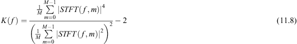
As shown, the spectral kurtosis depends on the spectrogram and its frequency resolution, which, in turn, depends on the duration of the sliding window used in the STFT calculation. The trade-off in time vs frequency resolution with the fixed-duration window of STFT is a well-known issue. A simple yet-effective way to partially address this problem is to use a multiwindow approach. The spectrogram is calculated with two different windows, and so also the spectral kurtosis computed with two different frequency resolutions, one finer and one coarser, enabling to extract different non-stationary components. A feature fusion approach can be applied, as proposed in [46], to form a single vector of feature samples by simply concatenating the values of spectral kurtosis extracted with both windows. This vector can then be used as the input to a classification algorithm.
It should be noted that additional pre-processing steps can also be performed to boost classification performances, for example different approaches to normalise the feature vector, or techniques for feature selection and dimensionality reduction, such as classic Principal Component Analysis (PCA).
Interesting results for this approach based on spectral kurtosis are reported in [46]. Each data recording was cut to segments of 2-s duration prior to computing spectrograms and extracting kurtosis. In that work, the values of the two STFT windows used for calculation of the spectrograms were 100 and 25 ms, respectively, and the size of the combined feature vector was 1,024 samples, compressed down to 64 after the application of the PCA. The applied classifier was a simple nearest neighbour classifier with the parameter number of neighbours set to 5. The split between training and testing data was done with a percentage of 70% and 30%, respectively, and the process repeated 100 times in a cross-validation approach with a random selection of data for training and testing.
The reported results yielded classification accuracy of 92.6% for the hovering drone case, 70.8% for the flying drone case, and 78.4% for the mixed classification of both hovering and flying cases, as shown in Table 11.1. In this case, the problem was cast as a six-class problem, with the no payload case and five payload cases (from 200 to 600-g weights). An analysis of the confusion matrix revealed that the majority of misclassification events happened between the two heaviest classes of payloads, 500 and 600 g, for which the normal dynamic of the drone was disrupted because of the effort to take off for hovering (difficulty to fly for the 500-g payload and impossibility to fly for the 600-g payload). The confusion matrix is reported in Table 11.2 for completeness.
Table 11.1 Probability of correct classification (Pcc) for six-class payload classification problem using spectral kurtosis features [46]
| Pcc (%) | Hovering | Flying | Hovering and flying |
| 92.61 | 70.83 | 78.36 |
Table 11.2 Averaged confusion matrix for the results of classification of six classes of payloads with spectral kurtosis features in the case of drone hovering [46]
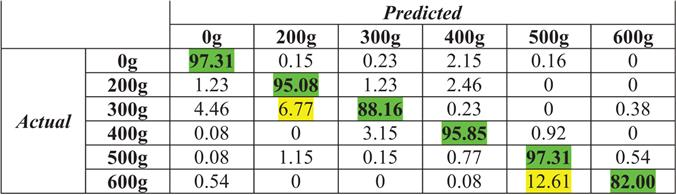
Note: The elements in bold fonts indicate correct classification as in the diagonal elements of the confusion matrix.
While still an initial proof of concept, these results show an interesting application of a new feature, the spectral kurtosis, which was not applied to drones and payload signatures before. Further work can explore the variables involved in the process, for example the duration of the STFT windows used, the reduction factor within the PCA, and different modalities to combine and select information from multiwindow spectrograms.
11.4 Conclusions and outlook
This chapter presented techniques and results published in the recent open literature on the problem of radar-based classification of drones carrying payloads. While limited to a simple data set of experimental data and proof of concept algorithms, the presented techniques are of interest and can inform future work emerging in the very active area of research of radar signatures of drones.
Classifying payloads on drones using radar signatures is a multifaceted research problem, which can be cast as a simple binary detection of the payload (is a payload there or not?), or as a more complex payload identification (what is the type, size, material composition of the payload?). Furthermore, in a way, this is also a problem within the problem of first of all recognising the presence of drones against other confusing targets, such as birds as the main example of false alarms. This problem is expected to be even more challenging as drones can increasingly operate as a coordinated swarm with many platforms.
Drawing conclusive results as to what features are significant for the detection and then classification of payloads is premature, as at the time of writing the open literature shows only examples of a few limited experimental data sets and related results, which this chapter aimed to summarise.
From these results one can conclude that the reflectivity/RCS of the drone plus payload is not significantly different from the values measured with the unloaded drone, without payload. On the contrary, changes in the Doppler and micro-Doppler spectrum are noticeable and probably due to the increase in weight causing an increase in rotation velocity of the rotor blades. Radars set up with the correct parameters can capture these differences, and these can be represented by suitable features, although with so little data it is yet to be concluded which features are the most effective. Furthermore, it is unclear how repeatable the promising results presented here are, if, for example, changes in the Doppler/micro-Doppler patterns of the blades are induced by wind gusts or special dynamic behaviour of the drone, rather than by the presence of payloads.
Nevertheless, the potential of micro-Doppler as a source of information for the drone payload problem has also been confirmed by the very recent studies in [49,50], where the signatures of drones carrying and then dropping a payload were recorded. In this case, the reduction in rotation rate of the blade signatures in the micro-Doppler was clearly noticeable just after the payload was dropped, showing that the drone would come back to a ‘normal’ dynamic regime after losing the payload. These two studies add up to the body of results presented in this chapter, although the questions remain on how repeatable these results are, as well as generalisable to different scenarios with other models of drones and types of payloads.
For future work, further research questions and material for investigation can include the following:
- The characterisation of payloads that are not solid objects attached to the drone body but can be, for example, liquids to be sprayed or powder to be diffused in the air. A recent work [51] by the University of St Andrews in the United Kingdom has, for example, presented an initial analysis of liquid sprayed by a commercial drone used for agriculture in the K and W radar bands (24 and 94 GHz, respectively). The analysis provided some values of signal-to-noise ratio and examples of micro-Doppler signatures, showing the potential of mm-wave radar to provide fine resolution and leverage stronger reflectivity of the liquid spray while being diffused in the air.
- The design of multi-frequency radar systems, whereby lower frequencies can provide detection and tracking capabilities for drones at longer distances, and higher frequencies can provide the resolution needed for better situational awareness and recognition capabilities (e.g. payloads), even if limited to a closer range. The definition of long-/short-range depends on the expected RCS of the drones and the hardware characteristics of the radar systems involved. However, the technological trend, driven mostly by automotive and autonomous vehicles, has seen relatively inexpensive chipsets and radar transceivers at mm-wave being brought to market, providing increasing performances in transmitted power, range, and angular resolutions. Furthermore, this approach can be extended to multimodal sensor frameworks, where other types of sensors, such as cameras, acoustic, and communication sensors, can be integrated.
- The investigation of classification techniques that do not extensively rely on the micro-Doppler signatures of the rotor blades. These cannot be detected well by radar systems at longer distances, as the RCS of the blades is lower than the RCS of the drone body. The development of classification algorithms that can operate on radar data representations and features other than micro-Doppler is therefore of interest, for example looking at the dynamic of the drone with metrics extracted from tracks (i.e. updates of location and velocity over time) [52]. Very preliminary results in [53] explored simple features extracted from polynomial fittings of the drone signature in range–time plots, essentially tracking velocity as the variation of location in time. This was applied on a proof of concept, short-range scenario with a quadcopter carrying a small payload consisting of 4-AA batteries attached to the rotor blade arms.
- The development of classification techniques that are explainable and trustable, therefore using features and decision processes that can easily be understood by human operators and decision makers in an operational scenario. This requirement is increasingly being considered, especially in security and safety applications, whereby the rationale behind decisions made by automatic target classification algorithms needs to be well understood. Examples of research in this direction are presented in [54,55], where simply explainable yet-effective features based on the symmetry, number, and intensity of the micro-Doppler signatures of drones were presented and validated on industrial radar systems.
Acknowledgements
The authors are grateful to M. Ritchie and H. Griffiths at UCL for assistance in obtaining the experimental data, and to the IET which funded the original experimental work through the A. F. Harvey Prize 2013 awarded to H. Griffiths.
The authors also thank J. Patel, C. Horne, F. Hoffmann, L. Pallotta and colleagues at Roma Tre University, for inputs in the original data collection and work on their analysis.
References
[1] “Unlocking the UK’s High Tech Economy: Consultation on the safe Use of drones in the UK,” Department for Transport, outcome released in July 2017.
[2] L. B. Haylen, Briefing Paper CB7734 on Civilian Drones, House of Commons Library, August 2017.
[3] https://www.bbc.com/news/topics/cnx1xjxwp51t/gatwick-drone-shutdown; BBC Topics “Gatwick drone shutdown,” accessed in October 2020.
[4] J. S. Patel, F. Fioranelli and D. Anderson, “Review of Radar Classification and RCS Characterisation Techniques for Small UAVs or Drones,” in IET Radar, Sonar & Navigation, vol. 12, no. 9, pp. 911–919, 2018.
[5] I. Guvenc, F. Koohifar, S. Singh, M. L. Sichitiu and D. Matolak, “Detection, Tracking, and Interdiction for Amateur Drones,” in IEEE Communications Magazine, vol. 56, no. 4, pp. 75–81, 2018.
[6] C. Clemente, F. Fioranelli and G. Li, “Guest Editorial: Innovative Radar Detection, Tracking and Classification for Small UAVs as an Emerging Class of Targets,” in IET Radar, Sonar & Navigation, vol. 14, no. 4, pp. 503–504, 2020.
[7] M. Ritchie, F. Fioranelli, H. Griffiths and B. Torvik, “Micro-drone RCS analysis,” 2015 IEEE Radar Conference, Johannesburg, South Africa, 2015, pp. 452–456.
[8] A. Schroder, M. Renker, U. Aulenbacher, et al., “Numerical and experimental radar cross section analysis of the quadrocopter DJI Phantom 2,” 2015 IEEE Radar Conference, Johannesburg, South Africa, 2015, pp. 463–468.
[9] K. Singh and Y. Kim, “Automatic Measurement of Blade Length and Rotation Rate of Drone Using W-Band Micro-Doppler Radar,” in IEEE Sensors Journal, vol. 18, no. 5, pp. 1895–1902, 2018.
[10] B. K. Kim, H.-S. Kang and S.-O. Park, “Experimental Analysis of Small Drone Polarimetry Based on Micro-Doppler signature,” in IEEE Geoscience Remote Sensing Letters, 2017, 14, no. 10, pp. 1670–1674.
[11] A. V. Khristenko, M. O. Konovalenko, M. E. Rovkin, et al., “Magnitude and Spectrum of Electromagnetic Wave Scattered by Small Quadcopter in $X$ –Band,” in IEEE Transactions on Antennas and Propagation, vol. 66, no. 4, pp. 1977–1984, 2018.
[12] J. Li and H. Ling, “An Investigation on the Radar Signatures of Small Consumer Drones,” in IEEE Antennas and Wireless Propagation Letters, vol. 16, pp. 649–652, 2017.
[13] R. Guay, G. Drolet and J. R. Bray, “Measurement and Modelling of the Dynamic Radar Cross-section of an Unmanned Aerial Vehicle,” in IET Radar, Sonar & Navigation, vol. 11, no. 7, pp. 1155–1160, 2017.
[14] S. Rahman and D. A. Robertson, “Radar Micro-Doppler Signatures of Drones and Birds at K-band and W-band,” in Nature Scientific Reports, vol. 8, p. 17396, 2018.
[15] M. Ritchie, F. Fioranelli, H. Griffiths, et al., “Monostatic and bistatic radar measurements of birds and micro-drone,” 2016 IEEE Radar Conf. RadarConf 2016, Philadelphia, PA, USA, 2016.
[16] A. Huizing, M. Heiligers, B. Dekker, J. de Wit, L. Cifola and R. Harmanny, “Deep Learning for Classification of Mini-UAVs Using Micro-Doppler Spectrograms in Cognitive Radar,” in IEEE Aerospace and Electronic Systems Magazine, vol. 34, no. 11, pp. 46–56, 2019.
[17] B. Torvik, K. E. Olsen and H. Griffiths, “Classification of Birds and UAVs Based on Radar Polarimetry,” in IEEE Geoscience Remote Sensing Letters, vol. 13, no. 9, pp. 1305–1309, 2016.
[18] J. J. M. de Wit, R. I. A. Harmanny and P. Molchanov, “Radar micro-Doppler feature extraction using the singular value decomposition,” 2014 Int. Radar Conf., Lille, 2014, pp. 1–6.
[19] N. Regev, I. Yoffe and D. Wulich, “Classification of single and multi-propelled miniature drones using multilayer perceptron artificial neural network,” International Conference on Radar Systems, Belfast, 2017, pp. 1–5.
[20] I. Roldan, C. R. del-Blanco, Á. D. de Quevedo, et al., “DopplerNet: A Convolutional Neural Network for Recognising Targets in Real Scenarios Using a Persistent Range–Doppler Radar,” in IET Radar, Sonar & Navigation, vol. 14, no. 4, pp. 593–600, 2020.
[21] P. Zhang, G. Li, C. Huo and H. Yin, “Exploitation of Multipath Micro-Doppler Signatures for Drone Classification,” in IET Radar, Sonar & Navigation, vol. 14, no. 4, pp. 586–592, 2020.
[22] N. Mohajerin, J. Histon, R. Dizaji and S. L. Waslander, “Feature extraction and radar track classification for detecting UAVs in civilian airspace,” 2014 IEEE Radar Conference, Cincinnati, OH, USA, 2014, pp. 0674–0679.
[23] K. Kim, M. Üney and B. Mulgrew, “Coherent Track-Before-Detect with Micro-Doppler Signature Estimation in Array Radars,” in IET Radar, Sonar & Navigation, vol. 14, no. 4, pp. 572–585, 2020.
[24] C. Ilioudis, C. Clemente and J. Soraghan, “GNSS-Based Passive UAV Monitoring: A Feasibility Study,” in IET Radar, Sonar & Navigation, vol. 14, no. 4, pp. 516–524, 2020.
[25] T. Martelli, F. Colone and R. Cardinali, “DVB-T Based Passive Radar for Simultaneous Counter-Drone Operations and Civil Air Traffic Surveillance,” in IET Radar, Sonar & Navigation, vol. 14, no. 4, pp. 505–515, 2020.
[26] A. D. Chadwick, “Micro-drone detection using software-defined 3G passive radar,” International Conference on Radar Systems (Radar 2017), Belfast, 2017, pp. 1–6.
[27] N. Ghazalli, A. Balleri, M. Jahangir, F. Colone and C. J. Baker, “Passive Detection Using a Staring Radar Illuminator of Opportunity,” 2019 International Radar Conference (RADAR), TOULON, France, 2019, pp. 1–5.
[28] T. Martelli, F. Murgia, F. Colone, C. Bongioanni and P. Lombardo, “Detection and 3D localization of ultralight aircrafts and drones with a WiFi-based passive radar,” International Conference on Radar Systems (Radar 2017), Belfast, 2017, pp. 1–6.
[29] T. E. Derham, S. Doughty, K. Woodbridge and C. J. Baker, “Design and Evaluation of a Low-Cost Multistatic Netted Radar System,” in IET Radar, Sonar & Navigation, vol. 1, no. 5, pp. 362–368, 2007.
[30] M. Ritchie, F. Fioranelli, H. Borrion and H. Griffiths, “Multistatic Micro-Doppler Radar Feature Extraction for Classification of Unloaded/Loaded Micro-Drones,” in IET Radar, Sonar & Navigation, vol. 11, no. 1, pp. 116–124, 2017.
[31] F. Fioranelli, M. Ritchie, H. Griffiths and H. Borrion, “Classification of Loaded/Unloaded Micro-Drones Using Multistatic Radar,” in Electronics Letters, vol. 51, no. 22, pp. 1813–1815, 2015.
[32] S. Z. Gurbuz and M. G. Amin, “Radar-Based Human-Motion Recognition With Deep Learning: Promising Applications for Indoor Monitoring,” in IEEE Signal Processing Magazine, vol. 36, no. 4, pp. 16–28, 2019.
[33] D. Tahmoush, “Review of Micro-Doppler Signatures,” in IET Radar, Sonar & Navigation, vol. 9, no. 9, pp. 1140–1146, 2015.
[34] F. Fioranelli, H. Griffiths, M. Ritchie and A. Balleri (Editors), Micro-Doppler Radar and its Applications, The Institution of Engineering and Technology, In Press (2020).
[35] C. Clemente, L. Pallotta, A. De Maio, J. J. Soraghan and A. Farina, “A Novel Algorithm for Radar Classification Based on Doppler Characteristics Exploiting Orthogonal Pseudo-Zernike Polynomials,” in IEEE Transactions on Aerospace and Electronic Systems, vol. 51, no. 1, pp. 417–430, 2015.
[36] V. C. Chen, D. Tahmoush and W. J. Miceli (Editors), Radar Micro-Doppler Signatures: Processing and Applications, The Institution of Engineering and Technology, In Press (2014).
[37] J. Markow and A. Balleri, “Examination of drone micro-Doppler and JEM/HERM signatures,” Presented at IEEE Radar Conference 2020, Florence, Italy, 2020.
[38] F. Fioranelli, M. Ritchie and H. Griffiths, “Classification of Unarmed/Armed Personnel Using the NetRAD Multistatic Radar for Micro-Doppler and Singular Value Decomposition Features,” in IEEE Geoscience and Remote Sensing Letters, vol. 12, no. 9, pp. 1933–1937, 2015.
[39] F. Fioranelli, M. Ritchie and H. Griffiths, “Centroid Features for Classification of Armed/Unarmed Multiple Personnel Using Multistatic Human Micro-Doppler,” in IET Radar, Sonar & Navigation, vol. 10, no. 9, pp. 1702–1710, 2016.
[40] F. Fioranelli, M. Ritchie, S. Z. Gürbüz and H. Griffiths, “Feature Diversity for Optimized Human Micro-Doppler Classification Using Multistatic Radar,” in IEEE Transactions on Aerospace and Electronic Systems, vol. 53, no. 2, pp. 640–654, 2017.
[41] J. S. Patel, C. Al-Ameri, F. Fioranelli and D. Anderson, “Multi-Time Frequency Analysis and Classification of A Micro-Drone Carrying Payloads Using Multistatic Radar,” in The Journal of Engineering, vol. 2019, no. 20, pp. 7047–7051, 2019.
[42] S. Harman, “Analysis of the radar return of micro-UAVs in flight,” 2017 IEEE Radar Conference (RadarConf), Seattle, WA, USA, 2017, pp. 1159–1164.
[43] A. Krizhevsky, I. Sutskever and G. E. Hinton, “Imagenet classification with deep convolutional neural networks,” NIPS’12 Proceedings of the 25th International Conference on Neural Information Processing Systems, 1, Lake Tahoe, NV, USA, December 2012, pp. 1097–1105.
[44] M. S. Seyfioglu, B. Erol, S. Z. Gurbuz and M. G. Amin, “DNN Transfer Learning From Diversified Micro-Doppler for Motion Classification,” in IEEE Transactions on Aerospace and Electronic Systems, vol. 55, no. 5, pp. 2164–2180, 2019.
[45] S. Rahman and D. A. Robertson, “Classification of Drones and Birds Using Convolutional Neural Networks Applied to Radar Micro-Doppler Spectrogram Images,” in IET Radar, Sonar & Navigation, vol. 14, no. 5, pp. 653–661, 2020.
[46] L. Pallotta, C. Clemente, A. Raddi and G. Giunta, “A feature-based approach for loaded/unloaded drones classification exploiting micro-Doppler signatures,” Presented at IEEE Radar Conference 2020, Florence, Italy, 2020.
[47] R. Dwyer, “Detection of non-Gaussian signals by frequency domain kurtosis estimation,” ICASSP’83. IEEE International Conference on Acoustics, Speech, and Signal Processing. IEEE, 1983, vol. 8, pp. 607–610.
[48] J. Antoni, “The Spectral Kurtosis: A Useful Tool for Characterizing Non-Stationary Signals,” in Mechanical Systems and Signal Processing, vol. 20, no. 2, pp. 282–307, 2006.
[49] J. de Wit, D. Gusland and R. Trommel, “Radar measurements for the assessment of features for drone characterization,” Presented at EURAD 2020, Utrecht, the Netherlands, 2020.
[50] S. Rahman, D. A. Robertson and M. A. Govoni, “Radar Signatures of Drones Equipped With Heavy Payloads and Dynamic Payloads Generating Inertial Forces,” in IEEE Access, vol. 8, pp. 220542–220556, 2020.
[51] S. Rahman, D. A. Robertson and M. A. Govoni, “Radar signatures of drones equipped with liquid spray payloads,” Presented at IEEE Radar Conference 2020, Florence, Italy, 2020.
[52] F. Barbaresco, D. Brooks and C. Adnet, “Machine and deep learning for drone radar recognition by micro-Doppler and kinematic criteria,” Presented at IEEE Radar Conference 2020, Florence, Italy, 2020.
[53] Y. Zhao, X. Zhang and F. Fioranelli, “Initial results of radar-based classification of commercial drone carrying small payloads,” 2019 International Radar Conference (RADAR), Toulon, France, 2019, pp. 1–4.
[54] C. Bennett, M. Jahangir, F. Fioranelli, B. I. Ahmad and J. Le Kernec, “Use of symmetrical peak extraction in drone micro-Doppler classification for staring radar,” Presented at IEEE Radar Conference 2020, Florence, Italy, 2020.
[55] F. Hofele, “Automatic radar target classification a new method having special regard to drones,” 2019 International Radar Conference (RADAR), Toulon, France, 2019, pp. 1–6.